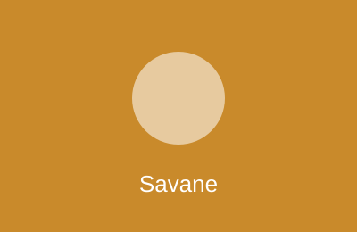

Zara
Girafe — née le 12/04/2019 — régime herbivore.

Grande plaine herbeuse de trois hectares, girafes, zèbres et autruches en cohabitation.
Girafe — née le 12/04/2019 — régime herbivore.
Girafe — né le 03/11/2024 — régime herbivore.
Zèbre de Grévy — né le 21/06/2017 — régime herbivore.
Zèbre de Grévy — née le 09/03/2021 — régime herbivore.
Autruche — né le 30/09/2018 — régime omnivore.
Rhinocéros blanc — né le 15/01/2012 — régime herbivore.
En soins pour une blessure au pied, visible depuis la passerelle nord seulement.
Suricate — colonie constituée le 05/05/2022 — régime insectivore.